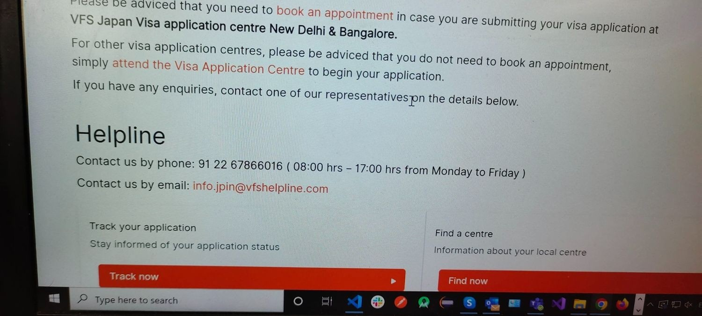
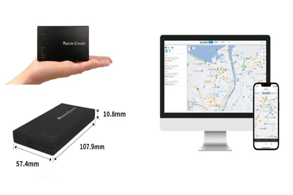
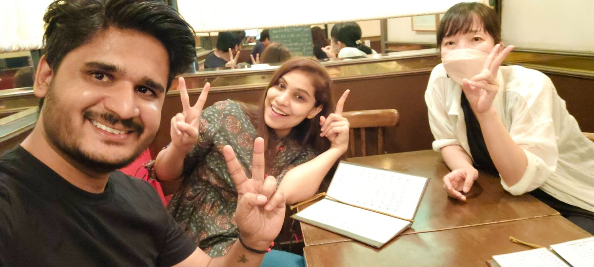

Year Five: The Border Is Open—Back to Japan and Finally Tying the Knot

After what felt like a lifetime of waiting, refreshing travel updates, and perfecting my long-distance relationship skills, Japan's borders finally reopened in April 2022. Cue the dramatic music and slow-motion suitcase packing—this was it. I was ready to return to Japan, reunite with my fiancée (now wife!), and dive back into the work-life I'd missed.
Every long separation is a test: A test to see how powerful or how weak the will of reuniting is!
Chapter 1: Back to Japan—And Back to My Fiancée!
April 2022. Japan's borders reopened, and with that, I was on the first flight out (or at least, the first flight that wasn’t booked solid). After months of pandemic delays, video calls, and virtual izakaya nights, I was finally going to see my fiancée again. Let’s just say the reunion was a lot more exciting than any Zoom meeting could ever be. I could almost hear the soundtrack to a rom-com playing in the background as I finally hugged her in person.
Chapter 2: New Challenges—Pandemic-Proofing My Japanese
But, as with all great love stories, there was a twist: the pandemic had seriously weakened my Japanese skills. After years of JLPT studying, lockdown had turned my kanji knowledge into mush. Ordering a simple coffee felt like I was back at square one. I found myself staring blankly at signs, as if the kanji had decided to take revenge for my months of neglect. Clearly, I had a new challenge on my hands: rediscovering my Japanese proficiency while juggling work projects.
Chapter 3: The IM-830 IoT Project—From Virtual to Reality
Back to work, and this time, it was all about the IM-830 IoT project. If you've ever wondered what it's like to work on integrating IoT devices, let me tell you—it's a lot like trying to coordinate a synchronized swimming team where each swimmer has their own agenda. The IM-830 was a shiny new IoT platform designed to bring data from different devices into one seamless interface.
But, of course, nothing is ever that smooth in tech. Cue the debugging, system testing, and occasional “Why is this even happening?” moments. Still, there's nothing like the feeling of pulling together a complex IoT project after a long break—kind of like getting back on a bike, except the bike has wires and is connected to the internet.
Chapter 4: Dining with Colleagues—Rekindling Connections Over Ramen
Now that I was back in Japan, it was time to reconnect with my colleagues and celebrate our reunion over some good food. What better way to bond than through the sacred art of dining? We chose a cozy ramen shop that promised the kind of broth that warms your soul and makes your worries disappear—if only for a while.
Chapter 5: The Wedding Bells Finally Ring—In India, With Special Guest
After months of pandemic postponements and border drama, my fiancée and I decided enough was enough: we were getting married in India. And guess who showed up to celebrate with us? My boss! That's right—my wedding had a surprising guest list, including the person who signs my paychecks.
The ceremony was a mix of joy, relief, and a touch of surrealism (because having your boss at your wedding is definitely a “2020s” kind of vibe). It was everything we'd waited for—family, friends, and finally saying “I do” after a whirlwind of delays and rescheduling.
Now, as I settle back into life in Japan, it's clear that the journey is far from over. From IoT adventures to mastering Japanese (again), year five was just the beginning of the next chapter.